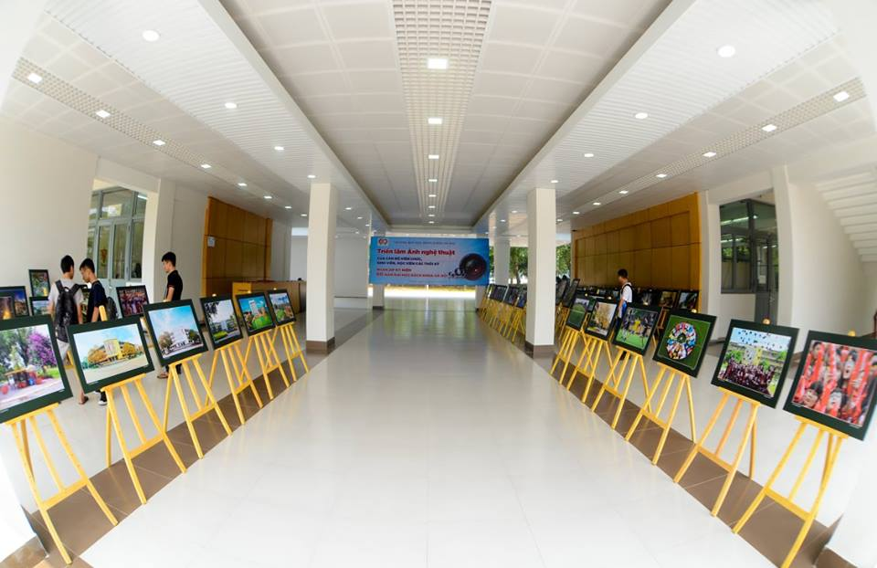

Hoạt động năng nổ và hiệu quả
Cháy hết mình trong các cuộc chơi
Giành những giải thưởng cao nhất
Trong không khí hân hoan chào đón mùa xuân mới, khi những cơn gió xuân dịu nhẹ bắt đầu len lỏi qua từng góc sân trường, Hội Xuân “Mừng Đảng – Mừng Xuân” Bính Ngọ 2026 do Trường THPT Rạch Kiến tổ chức chính thức được phát động, mang theo nhiều kỳ vọng, niềm vui và ý nghĩa nhân văn sâu sắc. Đây không chỉ là một hoạt động văn hóa thường niên, mà còn là sự kiện giàu tính giáo dục, góp phần nuôi dưỡng tâm hồn, bồi đắp lý tưởng sống và khơi dậy niềm tự hào truyền thống trong mỗi cán bộ, giáo viên và học sinh toàn trường.
Hội Xuân 2026 được tổ chức trong bối cảnh cả nước hân hoan chào mừng Đảng Cộng sản Việt Nam quang vinh, đón chào mùa xuân Bính Ngọ với nhiều niềm tin và khát vọng mới. Với chủ đề “Sắc Xuân Rạch Kiến”, chương trình “Xuân Yêu Thương” – lần thứ 5 tiếp tục khẳng định vai trò là cầu nối gắn kết giữa truyền thống và hiện đại, giữa giá trị văn hóa dân tộc và sức sống của tuổi trẻ học đường. Hội Xuân trở thành không gian sinh hoạt văn hóa lành mạnh, nơi những sắc màu Tết cổ truyền được tái hiện sinh động qua từng gian hàng, từng hoạt động trải nghiệm và từng nụ cười rạng rỡ của học sinh.
Không dừng lại ở ý nghĩa vui xuân, Hội Xuân “Mừng Đảng – Mừng Xuân” Bính Ngọ 2026 còn là dịp để nhà trường lan tỏa những thông điệp nhân văn về tinh thần sẻ chia, tương thân tương ái. Thông qua các hoạt động trong khuôn khổ chương trình “Xuân Yêu Thương”, thầy cô và học sinh có cơ hội cùng nhau chung tay thực hiện những nghĩa cử đẹp, hướng về cộng đồng, giúp đỡ những hoàn cảnh còn khó khăn, từ đó hun đúc lối sống nhân ái, trách nhiệm và biết yêu thương con người.

Mỗi gian hàng trong Hội Xuân là một mảnh ghép mang đậm hơi thở ngày Tết, phản ánh sự sáng tạo, khéo léo và tinh thần tập thể của từng lớp học. Từ những món ăn truyền thống, các sản phẩm thủ công đến những hoạt động trò chơi dân gian, tất cả đều góp phần tái hiện một bức tranh xuân gần gũi, ấm áp và đậm đà bản sắc dân tộc. Đây cũng là cơ hội để học sinh rèn luyện kỹ năng làm việc nhóm, kỹ năng tổ chức, giao tiếp và quản lý, những hành trang cần thiết cho hành trình trưởng thành sau này.
Bên cạnh đó, Hội Xuân 2026 còn mang ý nghĩa giáo dục sâu sắc khi tạo điều kiện để học sinh hiểu hơn về phong tục, tập quán ngày Tết của dân tộc, từ đó hình thành ý thức gìn giữ và phát huy các giá trị văn hóa truyền thống trong đời sống hiện đại. Trong không gian rộn ràng sắc xuân, những bài học về lịch sử, về lòng yêu nước, về trách nhiệm công dân được truyền tải một cách nhẹ nhàng nhưng đầy hiệu quả, giúp học sinh cảm nhận sâu sắc hơn vai trò của thế hệ trẻ trong công cuộc xây dựng và bảo vệ Tổ quốc.
Với sự chuẩn bị chu đáo, sự vào cuộc tích cực của Ban Giám hiệu, thầy cô giáo cùng tinh thần nhiệt huyết của học sinh, Hội Xuân “Mừng Đảng – Mừng Xuân” Bính Ngọ 2026 hứa hẹn sẽ là một điểm nhấn đáng nhớ trong chuỗi hoạt động phong trào của nhà trường. Thời gian đăng ký tham gia được ấn định vào ngày 23/01/2026, tạo điều kiện để các tập thể lớp lên kế hoạch, chuẩn bị ý tưởng và triển khai hoạt động một cách bài bản, sáng tạo.
Dự kiến tổ chức vào ngày 10/02/2026, nhằm ngày 23 tháng Chạp âm lịch, Hội Xuân diễn ra vào thời điểm ý nghĩa khi Tết Nguyên đán đang đến rất gần. Đây là lúc thầy và trò Trường THPT Rạch Kiến cùng nhau tạm gác lại những áp lực học tập, hòa mình vào không khí lễ hội, cùng sẻ chia niềm vui và lưu giữ những kỷ niệm đẹp dưới mái trường thân yêu. Những khoảnh khắc ấy sẽ trở thành dấu ấn khó quên trong ký ức tuổi học trò, góp phần làm nên thanh xuân rực rỡ của mỗi học sinh.Hội Xuân 2026 không chỉ là ngày hội của niềm vui, của sắc màu và tiếng cười, mà còn là nơi hội tụ của yêu thương, đoàn kết và khát vọng cống hiến. Qua từng hoạt động, chương trình đã khẳng định vai trò của nhà trường trong việc giáo dục toàn diện, không chỉ truyền đạt tri thức mà còn nuôi dưỡng tâm hồn, nhân cách và trách nhiệm xã hội cho học sinh. Đây chính là nền tảng vững chắc để các em tự tin bước vào tương lai, trở thành những công dân có ích cho gia đình và xã hội.
Với tinh thần “Mừng Đảng – Mừng Xuân”, Hội Xuân “Sắc Xuân Rạch Kiến” năm 2026 là lời chào xuân đầy ý nghĩa, là thông điệp yêu thương được lan tỏa từ mái trường THPT Rạch Kiến đến từng học sinh, từng gia đình và cộng đồng. Sự kiện hứa hẹn sẽ khép lại năm cũ bằng những kỷ niệm đẹp và mở ra năm mới với niềm tin, hy vọng và quyết tâm mới, để mùa xuân không chỉ hiện hữu trong không gian lễ hội mà còn lan tỏa trong từng hành động, suy nghĩ và trái tim của mỗi người.